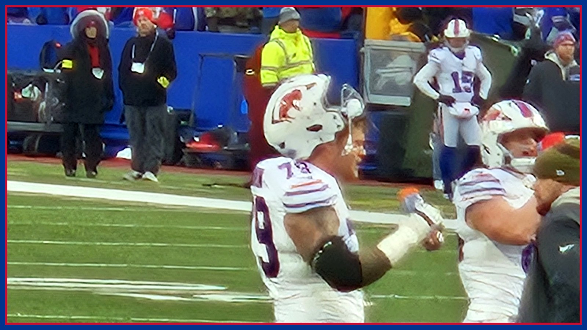

Spencer Brown went backwards Thursday. Friday now decides Buffalo's right tackle.
Right tackle Spencer Brown was Buffalo's only did-not-practice player Thursday, downgraded from limited Wednesday with an ankle injury, per the official Thursday report. With Dawkins, Anderson and McGovern all limited too, Friday's final designations — due today — decide the Buffalo Bills' line at the Jets.

The most important Buffalo Bills injury story of Jets week did not move forward on Thursday. It moved backwards. Right tackle Spencer Brown was the Bills' only did-not-practice player on Thursday, per the official Thursday injury report published by the Jets, downgraded from the limited participation he was estimated with during Wednesday's walk-through. The injury is the ankle Brown hurt early in Monday night's win at Minnesota — an injury he gutted through the rest of that evening, per The Athletic's Joe Buscaglia via Heavy. Limited on an estimated walk-through day is a holding pattern. A downgrade to DNP on the week's first real practice day is a direction, and it points toward Friday's final report, due today, carrying the decision Buffalo has been putting off all week.
Buscaglia's Thursday observation, via Heavy, is the detail that should make Bills fans sit up: after practice, Brown was in the huddle with his teammates in sandals, with a big wrap on his right ankle, and Buscaglia wrote that he believes it is unlikely Brown plays Sunday and that missing Thursday's practice is usually not a good sign. Buscaglia also raised the long-game argument — Buffalo is on a short week now and has another short week ahead, so resting Brown could protect the back injury he has been playing through since Week 5 as well as the ankle. None of that is an official ruling. Brown has not been ruled out, Friday's participation and game designation have not been published yet, and Sunday's inactives, about 90 minutes before the 1 PM ET kickoff at MetLife Stadium on CBS, remain the last word. But the Bills (7-1) do not need a beat writer to tell them what a Thursday DNP usually means in November. They need Friday to break the pattern.
Brown is not an isolated name, either — he is the worst line on a report that now runs through almost the entire starting offensive line. Per the same official Thursday report, left tackle Dion Dawkins (rib), left guard Alec Anderson (ankle) and center Connor McGovern (neck) were all limited for the second straight day. Dawkins and Anderson both missed Monday's 23-6 win over Minnesota, per the Democrat and Chronicle, when Tylan Grable started at left tackle and Austin Corbett filled in at left guard and Buffalo still held the ball and controlled the game. Brown, meanwhile, had only just returned against Minnesota after missing the Baltimore game with the back injury, per the Democrat and Chronicle. So the sequence matters: Buffalo got its right tackle back for one night, watched him get hurt early in that game and finish it anyway, and has now watched him go from estimated limited to out entirely in the space of two report days.
If Friday does not rescue Brown, Buffalo already knows its answer, because it has used it twice in three weeks. If Brown cannot go, Tylan Grable will start at right tackle again, per Heavy — Grable replaced Brown two weeks ago against Baltimore and then started at left tackle last week in Minnesota. That is real depth, and it is also a tell. Grable becoming the answer at both tackle spots in consecutive weeks means Buffalo's margin is no longer theoretical: one more bad day for Dawkins, who is still only limited with the rib injury that kept him out Monday, and the Bills would be shuffling both edges of the line that protects Josh Allen and clears the way for James Cook in the same week, on the road, in a division game. Per NBC Sports' preview, Buffalo enters Sunday with the NFL's highest-scoring offense at 32.0 points per game and a league-leading 386.4 yards per game. That offense is the reason this team is 7-1. It also runs directly behind the four names on this report.
The rest of Thursday's sheet was steadier, and it deserves to be reported as precisely as the bad news. Cornerback Christian Benford (wrist) was limited for the second straight day, per the official report; Benford hurt his right wrist against Minnesota, had an X-ray at halftime, returned, and then left again in the third quarter, per the Democrat and Chronicle. Tight end Dalton Kincaid (ankle) was limited Wednesday and Thursday. Defensive back Sam Franklin Jr. was added to Thursday's report with a shoulder injury and was limited — a new name worth watching on the day Amani Hooker's debut role is still being sized up. On the good side of the ledger, defensive lineman Greg Gaines (calf) was a full participant both days after missing two straight games, per the Democrat and Chronicle, and defensive back Jordan Hancock, guard Ar'maj Reed-Adams, defensive lineman T.J. Sanders and receiver Tyrell Shavers were all full participants again, per the official report. Limited is not out, and full is not a guarantee — but Gaines trending to full while Brown trends to out is the whole week in one sentence: Buffalo is getting its defensive front back at the same time its offensive front is thinning out.
The Jets' side of the report explains why Buffalo cannot simply assume a quiet afternoon if its line is patched together. Wide receiver Garrett Wilson was limited for the second straight day with the concussion that forced him to miss Sunday's loss at Kansas City, per the Democrat and Chronicle — limited two days running is progress in the protocol, not clearance, and his Friday designation is the other half of today's news. Defensive tackle Harrison Phillips (ankle) and linebacker Trevin Wallace (groin) did not practice for the second straight day, and cornerback Jarvis Brownlee Jr. missed Thursday with an illness, per the official report. The Jets are 2-7 and have lost four straight, and head coach Joe Brady said this week, per the Bills via Heavy, that records lie in the NFL and that New York has been in a lot of one-score games. A division road game on a short week, with a backup tackle possibly starting, is exactly the kind of afternoon where records lie the loudest.
So Friday is now the whole ballgame before the ballgame. Both teams release their final reports today, with game designations, per the Democrat and Chronicle, and three answers matter more than everything else said this week: does Brown practice at all, does Dawkins move from limited toward full, and does Wilson clear the final steps in front of him? This desk will not print a Thursday DNP as a Sunday inactive, and it will not print a sandals-and-wrap sighting as a medical verdict. But direction is information, and on Thursday every arrow attached to Spencer Brown pointed the wrong way. Buffalo survived Minnesota without two starting linemen because it had a week to build that plan. If Friday confirms the worst, it will have about 48 hours to build the next one. Go Bills — and get Friday's designations, Sunday's inactives and every Jets-week update in your inbox every morning with The BNC Blitz.
The BNC Blitz is free: the day's Bills news, one stat that matters, and one take, every morning. Join to keep reading — and never miss the end of a story again.